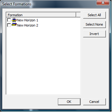
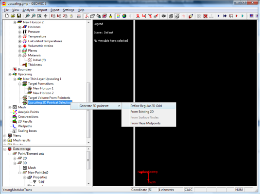
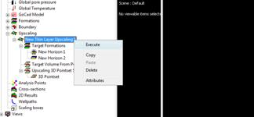

Upscaling Procedure Thin layers
A reservoir may exist of many thin layers rather than a uniform formation of sand. The layers may be alternating shale-sand formations or sand formations with an (orders of magnitude) different permeability and stiffness.
Thin bedded formations have different compressibilities in normal and lateral directions. Depletion (both in terms of drainage and in terms of sweep efficiency) may also be very different over the thin layers. Some shale layers may even be fully undrained, where thin sands may only partially deplete.
A static model (like a Petrel model) may have all this information from cross-correlation of wells. The thin layers are usually sub-seismic.
For large fields, it is impossible to model all (metre-scale) layers in a Finite Element model, if also the full overburden, sideburden and underburden needs to be modelled. A method to deal with this problem is upscaling. A Reservoir Engineering package can usually deal with much thinner layers than a Geomechanical package can. The Reservoir Simulator can leave out non-producing zones (like the over and underburden) and sometimes disregard non-producing shale layers (void blocks). Besides, the aspect ratios (height versus length or width) can be much worse. Even here, upscaling takes place.
Create and populate an refined model
Start by creating a fine scaled model. This can be a mesh to compute fine scaled stress changes on later or an artificial mesh, only meant to do the upscaling of parameters (not to do Finite Element computations)
- Create a fine scaled (hexahedron of tetrahedron) mesh of the reservoir and (perhaps) direct overburden/underburden. This can be a close copy of the reservoir simulator mesh or from the static model mesh. Use the thin layer surfaces as Formation boundaries.
- Import (3D or 2D per sublayer) Temperature and Pressure data from the Reservoir Simulator. Make sure what assumptions the Reservoir Engineer has made on the shale (or low perm) layers. If he did not compute updated pressures or temperatures, make sure that you do not assign data to these Formations (or that the change is zero: initial data only).
- Decide whether or not to compute pressure and temperature changes in the direct overburden, underburden and Shale Formations, assuming the Reservoir Simulator did not supply them. You can use the Heat Flow module to compute updated Temperatures (also for non-permeable layers !). With Mixture Flow, you can compute reservoir deformation and single phase fluid flow (pressure changes) in the non-reservoir layers at the same time. The effects of temperature changes on fluid and rock expansion will also be taken into account.
- If the non-reservoir layers are truely non-depleting (impermeable in a decade’s depletion time frame), you may choose the material model “undrained”. In this case the rock and fluids are assumed to act as a single (undrained) material. Do not assign pressure changes to undrained materials. You cannot (should not) mix undrained materials with fluid flow (mixture flow) computations
Do the upscaling
In the upscaling routine, the user needs to select the upscaling range (formations and volume of interest).
Within Geomec, Right click on the Upscaling leaf and select “New Thin Layer Upscaling”.
· Check the Formations that require upscaling . All unflagged Formations or elements outside an assigned 3D pointset area (convex hull volume) will not be upscaled.
The user can limit the volume of the Formations to be upscaled by adding 3D pointsets (drag and drop) to the leaf “Target Volume from pointset”. The volume of the pointset is determined by a convex hull method. When adding multiple pointsets, the user can select whether the volume of interest should be the overlap of all pointsets (AND) or the total of volumes of any pointset (OR).

· Create a semi-regular 3D pointset to be collapsed to a 2D pointset. This either an extrusion of a 2D-pointset or surface or the Midpoints of Hexahedrons. The Depth spacing is based on the element density.

- Do the upscaling by clicking “Execute”, which is accessible by right-clicking on the “New Thin Layer Upscaling x” branch.

- Geomec computes an upscaled 2D pointset, that lands in the data storage

· Export the 2D pointset for import and use the pointset in a different (coarser scaled) Geomec model, or modify the present file by deleting layers or surfaces.
· Assign the pointsets to the upscaled Formations, using the material model Upscaled Anisotropy